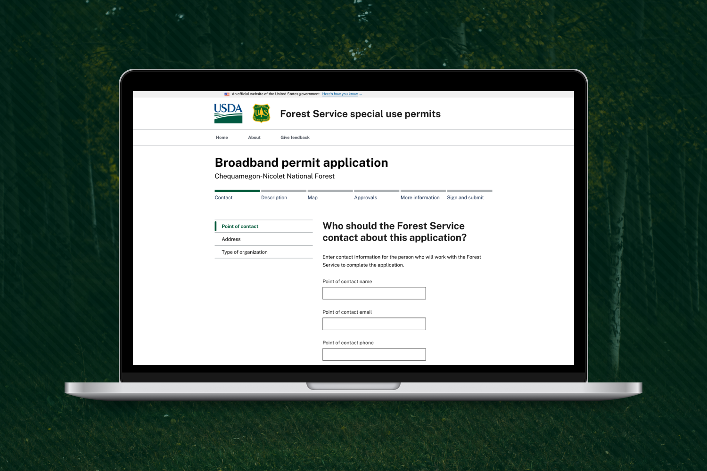
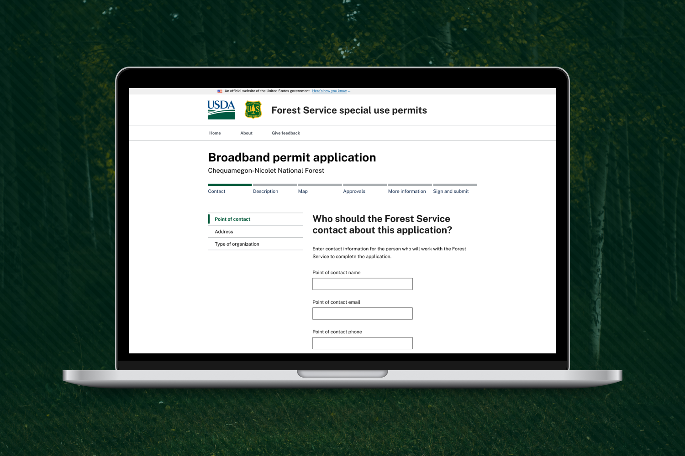

USFS Special Use Permits
Supporting the responsible use of public lands through easier permits
Supporting the responsible use of public lands through easier permits
Businesses and members of the public will often use some of the U.S. Forest Service’s 193 million acres of land for commercial purposes. Sometimes it’s something small and recreational like leading a kayak tour. Other times it’s a huge corporate project like digging a trench for broadband lines. In both cases, you need a permit to do it! In the case of commercial uses like these, they’re called Special Use Permits.
Special Use Permits exist to ensure the safe and responsible use of public lands. But, applicants were finding themselves frustrated. Rules weren't the same between forests, the process was often arduous, and people would get rejections for unknown reasons. This creates two problems. First, people may bounce off and will choose not to use Forest Service lands. Second, and worse, they may try to use the lands anyway. This can have disastrous consequences for their safety and the natural environment.
I led the user experience research and design on a prototype for online Special Use permitting, including:
My team achieved our short term goal of proving out the concept with a live prototype. This helped our partners secure their next round of funding to continue work on the project. We also helped them hire the first full-time product owner for this product, a huge step in moving forward.